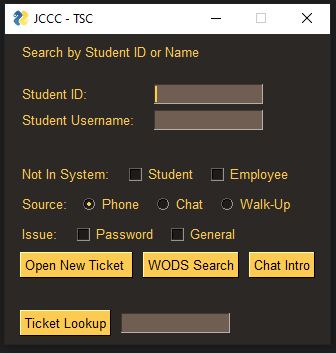
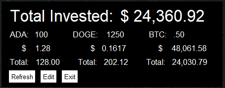
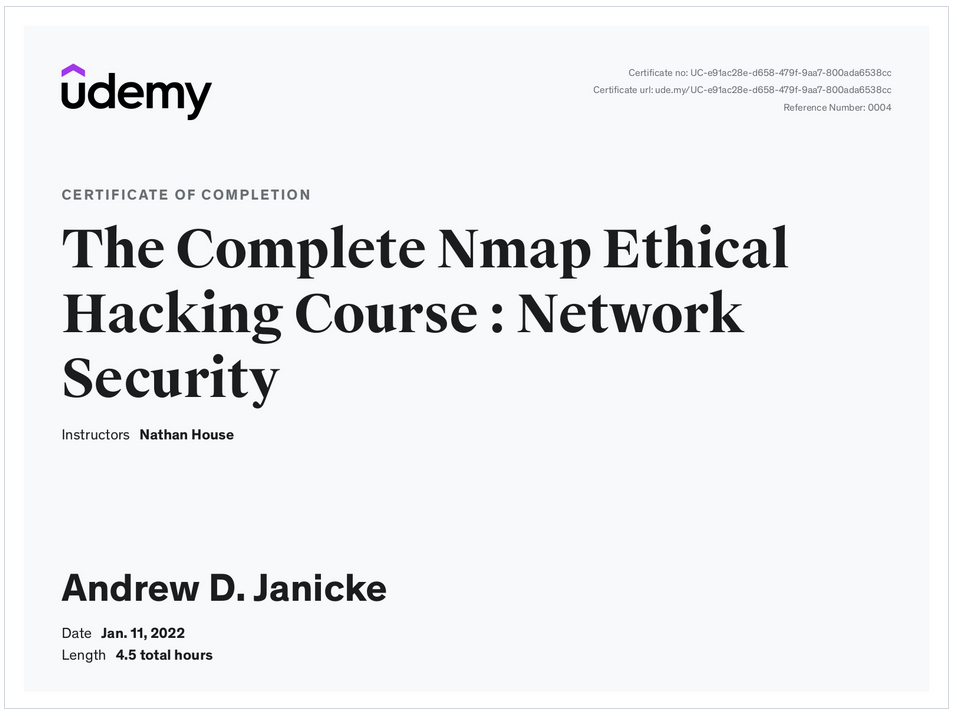
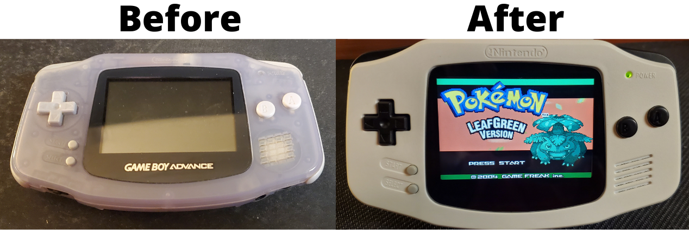

Git Hub Projects
JCCC Ticket-Assistant
A Python application that allows the user to create a ticket from a student ID or Username then auto fill the ticket with student's information. It can also looks up the student in WODS, create a "Not in system" requestor ticket, copy a chat intro to the clipboard, or do a ticket search.
- Language:
- Python 3.10
- Modules:
- Webbrowser, sys, PyAutoGUI, PyperClip, Time
- GUI Design:
- PySimpleGUI
- Limitations:
- The applications runs more like a macro than anything. If a user cannot be found it will continue the ticket creation process but will not fill out the information correctly due to the lack of information.
ADA/DOGE/BTC Tracker Widget
A small Crypto Scraper that pulls the current prices of ADA, DOGE, and BTC from CoinMarketCap. You can also enter your owned coins to see how much you own in each currency and get a total investment amount. This runs as a headless widget that sits on your desktop.
- Language used:
- Python 3.7
- Modules:
- Requests, BeautifulSoup4, CSV
- GUI Design:
- PySimpleGUI
- Limitations:
- Currently no other coins can be added without hard coding them in.
YouTube Video/MP3 Downloader
A simple YouTube Video and MP3 downloader that was built in Python
- Language Used:
- Python 3.19
- Modules:
- PyTube, OS, and Tkinter
- GUI Design:
- Tkinter and Ttk
- Limitations:
- Video files are limited to 720p resolution
- Exporting:
- EXE was exported using PyInstaller
Certifications
Nmap Ethical Hacking Course
Nmap course on the various profiles and scanning techniques for cyber security and ethical hacking.
Console Restorations
I also enjoy refurbishing and restoring old consoles. My personal favorites are the Gameboy series and the original Xbox as both of these can be significantly upgraded and brought into the modern day!
